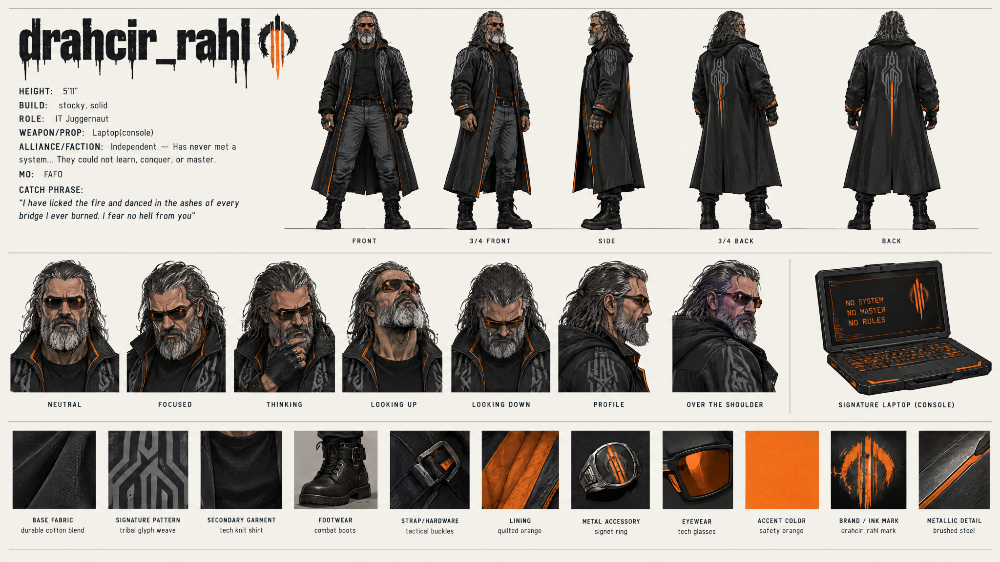

drahcir_rahl
drahcir_rahl — The IT Juggernaut. An independent character recognizable by his long salt-and-pepper hair, full beard, orange-tinted glasses, and black coat with orange trim. His signature equipment is a rugged laptop/console. His story with TurboFit begins with a forceful reminder to keep the chat organized and develops into a friendship.


Credits
- Character and original clips: rahlquist
- Combined friendship edit: 123mikeyD
Friendship with TurboFit
Read Turbo Fit’s profile.
All Nous characters · Content notice